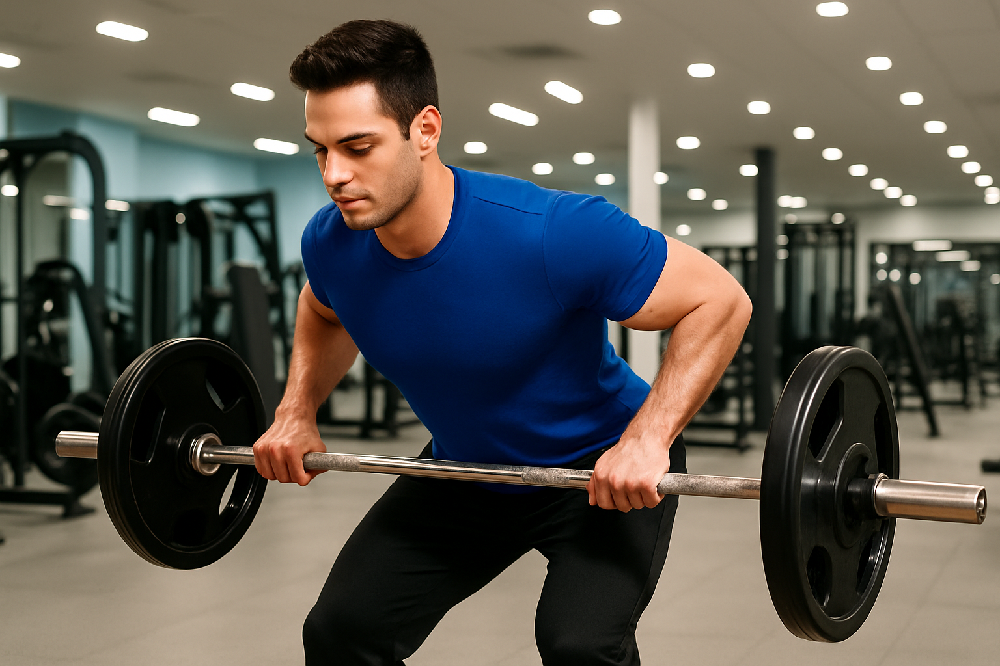
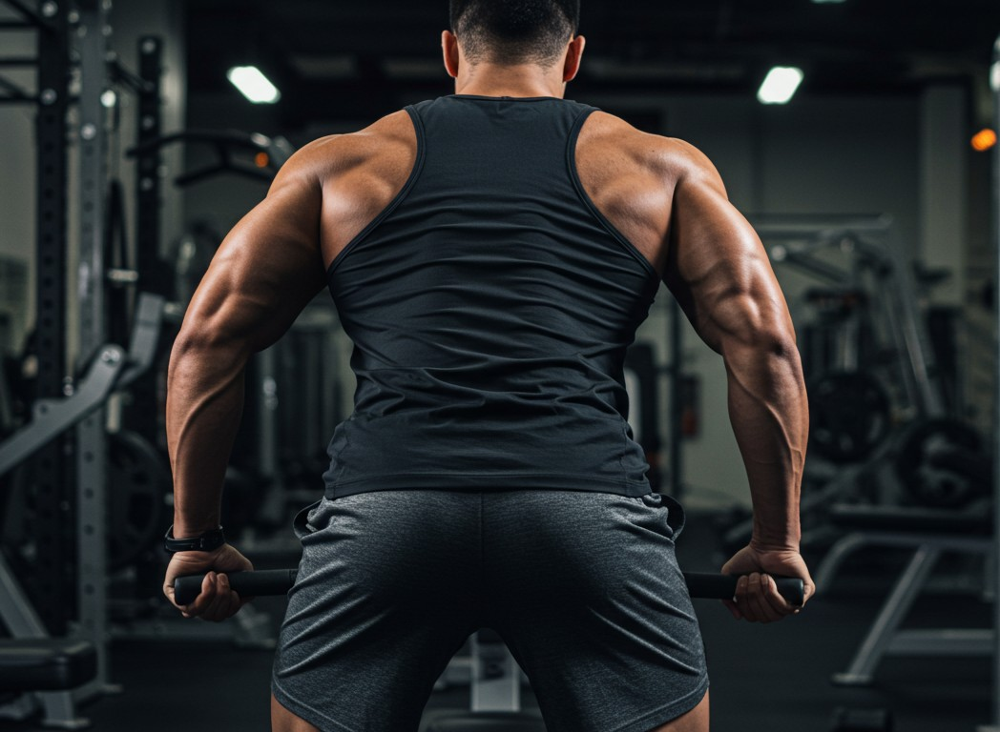

Dominadas

Si buscas un ejercicio compuesto y con solo tu peso corporal, este es el indicado.
Aqui podras encontrar como debes hacer este ejercicio.
Jalon al Pecho

Ejercicio de gimnasio increible para toda tu espalda, incluso para principiantes.
Aqui podras encontrar como debes hacer este ejercicio.
Remo horizontal en polea

Ejercicio de gimnasio increible para toda tu espalda, incluso para principiantes.
Aqui podras encontrar como debes hacer este ejercicio.
Remo en barra T

Ejercicio con maquina de gym increible para toda tu espalda, incluso para principiantes.
Aqui podras encontrar como debes hacer este ejercicio.
Remo con barra libre
Descubre los secretos de una nutrición balanceada.
Aqui podras encontrar como debes hacer este ejercicio.
Pull over
Ejercicio efectivo para tus dorsales, utilizando una polea.
Aqui podras encontrar como debes hacer este ejercicio.